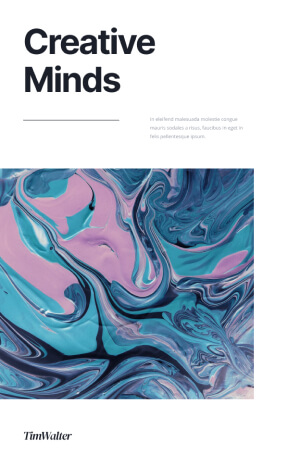
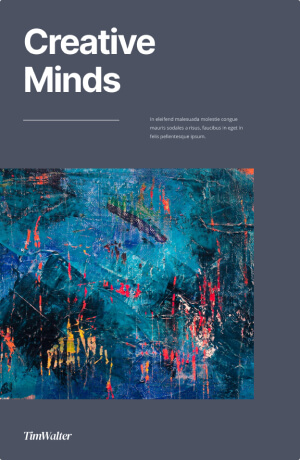
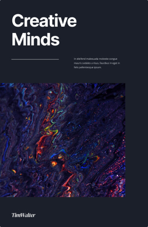

Biblioteca Digital & Formación
Recursos para Profesionales
Herramientas clínicas, artículos científicos y material de formación continua para psicólogos y profesionales de la salud mental.

Manual de Psicoterapia y Salud Mental
Guía teórica y práctica con modelos de intervención psicosocial y protocolos clínicos.
Acceder a la publicación arrow_forward
Estrategias de Intervención en Crisis
Herramientas clínicas para profesionales ante situaciones complejas y momentos de desestabilización aguda.
Acceder a la publicación arrow_forward
Prevención del Suicidio y Abordaje Integral
Evaluación de riesgo suicida, protocolos clínicos y guías de acompañamiento para el equipo interdisciplinario.
Acceder a la publicación arrow_forward